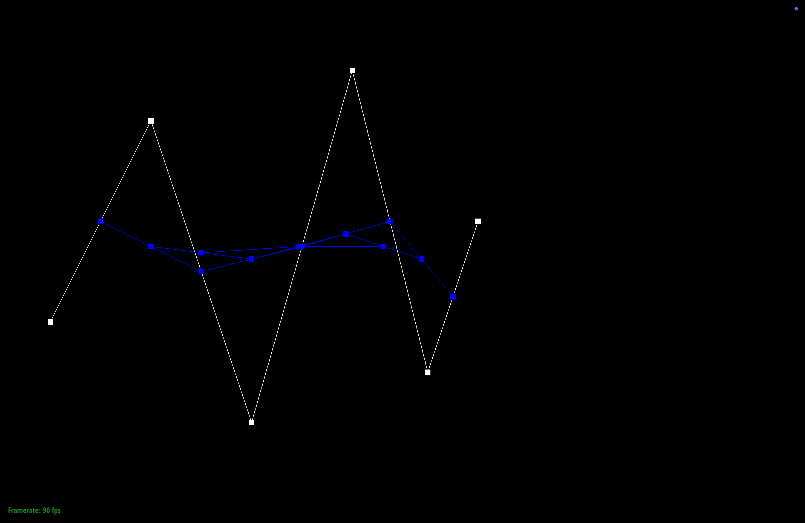

CS184/284A Summer 2025 Homework 2 Write-Up
Link to webpage: https://cal-cs184.github.io/hw-webpages-su25-yijun-xiang/
Link to GitHub repository: https://github.com/cal-cs184/hw2-meshedit-ikun
Overview
In this homework, I implemented a comprehensive mesh processing system that includes Bezier curve/surface evaluation using de Casteljau's algorithm and various mesh operations using the half-edge data structure. The project demonstrates proficiency in geometric modeling, from parametric surfaces to discrete mesh manipulation.
I successfully implemented all required features plus extensive extra credit work: boundary edge support for both split and subdivision operations, and the Catmull-Clark subdivision scheme as an additional subdivision method. The implementation showcases deep understanding of mesh topology and careful pointer management in the half-edge data structure.
Section I: Bezier Curves and Surfaces
Part 1: Bezier curves with 1D de Casteljau subdivision
De Casteljau's algorithm elegantly evaluates Bezier curves through recursive linear interpolation. At each subdivision level, we reduce n control points to n-1 intermediate points using the formula: p'_i = (1-t)p_i + tp_{i+1}. My implementation in evaluateStep() performs one level of this subdivision, allowing visualization of the complete evaluation process.
I created a custom 6-control-point Bezier curve that forms an aesthetically pleasing S-curve:
The evaluation process demonstrates the algorithm's recursive nature:
|
|
|
|
|

|
|
|
Interactive manipulation demonstrates the curve's response to parameter and control point changes:
Part 2: Bezier surfaces with separable 1D de Casteljau
Bezier surfaces extend the 1D algorithm through tensor product construction. My implementation applies de Casteljau's algorithm in two passes: first evaluating n curves along the u-parameter for each row of control points, then evaluating the resulting curve along the v-parameter. This separable approach maintains the elegance of the 1D algorithm while generalizing to surfaces.
The implementation consists of three key functions:
evaluateStep(): Performs one subdivision step (reused from curves)evaluate1D(): Fully evaluates a curve by repeatedly calling evaluateStepevaluate(): Orchestrates the two-pass evaluation for surfaces
Section II: Triangle Meshes and Half-Edge Data Structure
Part 3: Area-weighted vertex normals
Smooth shading requires per-vertex normals computed as area-weighted averages of incident face normals. My implementation iterates through faces incident to each vertex using the half-edge circulator pattern. For each face, I compute the normal via cross product of two edge vectors. The key insight is that the cross product magnitude is proportional to twice the triangle area, so I can use the unnormalized cross product directly as the area-weighted contribution.
Part 4: Edge flip
Edge flip rotates an edge within its quadrilateral, converting triangles (a,b,c) and (c,b,d) into (a,d,c) and (a,b,d). My implementation follows a systematic approach:
- Check for boundary edges (return immediately if found)
- Collect all affected elements: 6 halfedges, 4 vertices, 5 edges, 2 faces
- Update all pointers using
setNeighbors()for halfedges - Update single pointers for vertices, edges, and faces
The key insight was maintaining a clear before/after diagram and updating ALL pointers systematically, even those that don't change, to avoid subtle bugs.

Part 5: Edge split
Edge split inserts a vertex at the edge midpoint and connects it to opposite vertices, converting 2 triangles into 4. This operation is more complex than flip, requiring creation of new elements:
- 1 new vertex (positioned at edge midpoint)
- 3 new edges (connecting midpoint to opposite vertices and splitting original edge)
- 6 new halfedges
- 2 new faces
Extra Credit - Boundary Edge Support: I implemented special handling for boundary edges. When splitting a boundary edge, only the single incident face is subdivided into two triangles. This required careful management of the virtual boundary face and ensuring all halfedge twins are correctly maintained.
|
|
|
|
|
|
Debugging Journey: The most challenging bug involved incorrect isNew flag propagation, causing the subdivision algorithm to flip wrong edges. The solution required preserving the original edge's isNew status through the split operation.
Part 6: Loop subdivision for mesh upsampling
Loop subdivision creates smoother meshes through a carefully orchestrated three-step process:
- Pre-compute positions: Calculate new positions for all vertices before modifying topology
- Subdivide topology: Split all original edges, then flip new edges connecting old and new vertices
- Update positions: Apply the pre-computed positions to all vertices
The vertex update rules implement Loop's weighting scheme:
- New edge vertices:
3/8 * (A + B) + 1/8 * (C + D)where A,B are edge endpoints and C,D are opposite vertices - Old vertices:
(1 - n*u) * original_position + u * neighbor_sumwhere u = 3/16 for n=3, 3/(8n) for n>3
Extra Credit - Boundary Support: I implemented special boundary rules:
- Boundary edge midpoints: simple average of endpoints
- Boundary vertices with 2 neighbors:
3/4 * vertex + 1/8 * (neighbor1 + neighbor2)
Loop subdivision progressively smooths the mesh:

Icosahedron subdivision levels 0-4: convergence toward a smooth sphere
Sharp features are gradually smoothed by Loop subdivision. Pre-splitting edges can help preserve features by adding more geometric detail before smoothing begins.
Cube Subdivision Asymmetry:
The asymmetry occurs because the cube's faces are initially triangulated with diagonal edges all oriented consistently (e.g., all from bottom-left to top-right). This creates rotational bias in the mesh. Pre-splitting all edges creates a symmetric topology where each face has its diagonals meeting at the center, eliminating the directional bias.
Extra Credit: Catmull-Clark Subdivision
I implemented Catmull-Clark subdivision as an additional subdivision scheme. Originally designed for quadrilateral meshes, I adapted it for triangle meshes following the generalized approach.
The algorithm computes three types of points:
- Face points: Average of all vertices in each face
- Edge points: Average of edge endpoints and adjacent face points
- Vertex points: Weighted combination using the formula
(F + 2R + (n-3)V) / nwhere F is the average of adjacent face points, R is the average of edge midpoints, and n is the vertex valence

While Catmull-Clark produces similar smoothing to Loop subdivision on triangle meshes, it uses different weights that can create subtly different surface characteristics. The implementation required careful adaptation of the quad-based rules to work with triangular faces.
Technical Achievements
- Robust boundary handling in both edge split and Loop subdivision
- Systematic pointer management preventing segmentation faults
- Pre-computation strategy avoiding expensive traversals of subdivided meshes
- Clean separation between topological and geometric operations
- Implementation of an additional subdivision scheme (Catmull-Clark)
Conclusion
This project provided deep insights into geometric modeling, from the mathematical elegance of Bezier surfaces to the combinatorial complexity of mesh manipulation. The half-edge data structure proved remarkably powerful for implementing local mesh operations. The most valuable lesson was the importance of systematic approaches to pointer management - careful planning and comprehensive updates prevent subtle bugs that are difficult to debug. Implementing Catmull-Clark subdivision as extra credit deepened my understanding of how different subdivision schemes achieve smooth surfaces through varied mathematical approaches.